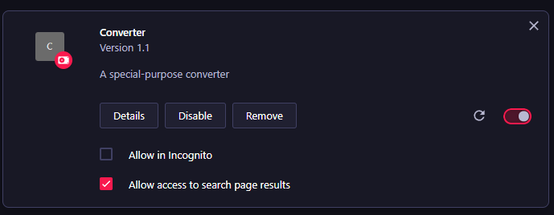

Help
How to install
- Go to the web address
yourbrowsername://extensions
For example when using Opera(GX), go to opera://extensions
- Optionally, you can click ALT, then in that menu go to Extensions → Extensions
- Enable Developer Mode
- Click "Load unpacked" and select the folder
browser-ext
- The end product should look somewhat like this:

How to use
- When on the page you want to export the Word from (Atlassian Confluence page) click on extensions → Converter → Download Word page
- In the main application,
extracting-algo.exe, check the box "Use file made by extension"
(c) Gabriel Stammler, 2023